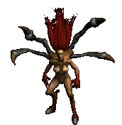
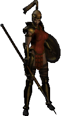
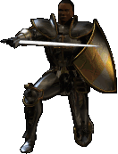

La historia toma parte en el mundo de Santuario, en la antesala de un conflicto entre los reinos del Cielo y el Infierno
Hordas de monstruos infernales parecen emerger del interior de la antigua catedral en la ciudad de Tristán
Deberás asumir el papel de héroe y descender a los mismísimos infiernos abrasadores para derrotar a Diablo, el Señor del Terror
Buena suerte, Nephalem...
A lo largo de este recorrido conocerás a algunos de los horrores que deambulan por las tierras de Santuario,
así como a los héroes elegidos para hacerles frente. También podrás deleitarte con algunas de
las composiciones músicales que te acompañarán en esta aventura hacia las profundidades del infierno.

Criaturas de Santuario
Los esbirros y secuaces de Diablo se cuentan por cientos. Esta es una pequeña muestra
de los horrores a los que te tendrás que enfrentar en tu camino por Santuario.
Andariel
Mephisto
Diablo
Yeti
Guardián
Esqueleto
Héroes Nephalem
En los tiempos más oscuros es cuando la luz brilla con más fuerza. Estos son algunos
de los héroes que se han unido para poner fin al reino de terror de Diablo.
Guerrero

Arpía

Mago
Bárbaro

Hechicera
Amazona
Nigromante
Paladín

Stay awhile and listen...
Escucha algunas de las piezas musicales que dan identidad a la oscura atmósfera de Santuario.
La catedral
Las llanuras
El campamento